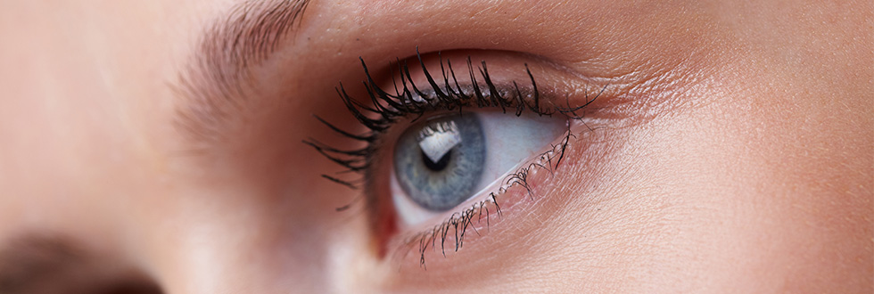

Neoformazioni palpebraliLa chirurgia delle palpebre è per definizione appannaggio del chirurgo oculista perfezionato in chirurgia oftalmoplastica. Si tratta di un tipo di chirurgia che necessita di una specifica competenza in quanto tratta di una regione o meglio di una unità estetica che associa all’elevato rischio estetico, complesse esigenze di funzionalità e problematiche sempre diverse a seconda del tipo di lesione asportata. Unità estetica palpebraleNel trattamento delle neoformazioni palpebrali è fondamentale lo studio della unità estetica perioculare che rappresenta un’area estremamente importante e delicata per le caratteristiche anatomiche (cute molto sottile e muscoli con elevati livelli di specializzazione e funzione), fisiche (tensione ed elasticità), presenza di pliche e solchi di espressione, rapporti con i piani ligamentosi ed ossei profondi. Queste peculiarità rendono la regione perioculare particolarmente predisposta a patologie distrettuali che spesso necessitano di procedure chirurgiche che sia nella fase di asportazione delle lesioni che di ricostruzione rispettino le caratteristiche estetiche e funzionali. Estetica e funzionalitàL’estetica delle palpebre è fondamentalmente legata alla sua simmetria con la palpebra controlaterale, al taglio (caucasico o orientale), alla presenza della piega occidentale, ai rapporti con il sopraciglio. La funzionalità delle lamelle palpebrali è strettamente connessa alla funzione visiva e alla protezione dell’occhio, alla sinergia con i movimenti del bulbo e all’ammiccamento rappresentando una parte essenziale nella struttura della superficie oculare. Intervento di asportazione delle neoformazioniPer quanto riguarda l’asportazione delle neoformazioni palpebrali è fondamentale diagnosticare sempre con sicurezza la natura delle lesioni mediante un esame istologico. Indipendentemente dalla scelta della tecnica chirurgica e dalla bontà dell’esecuzione (chiusura diretta classica, round block, lembo o innesto cutaneo, guarigione per seconda intenzione) è fondamentale ricordare che il risultato finale è sempre una cicatrice visibile. Il risultato cicatriziale può essere a rischio per la inadeguatezza del tipo di sutura utilizzata, per le caratteristiche della cute palpebrale, per la direzione (nel volto tutte le escissioni sono in rapporto con pieghe e rughe naturali). Esistono pazienti a rischio per l’età (adolescenza), per genetica (hanno già sviluppato pessime cicatrici senza un motivo evidente o hanno parenti che cicatrizzano male), per scarso controllo postoperatorio. È importante sottolineare che la miglior prevenzione delle cattive cicatrici è paradossalmente evitarle, cioè non fare asportazioni eccessivamente aggressive sia per le lesioni benigne dove può essere sufficiente uno shaving sia per le lesioni maligne dove è importante calibrare il livello di escissione radicale e sicura con le problematiche della ricostruzione conseguente. Le neoformazioni sospette o francamente maligne vengono trattate con protocolli diagnostici (fotografia digitale e studio al microscopio operatorio) e tecniche di marcatura intraoperatoria che permettono di ottenere risultati oncologici sovrapponibili alla chirurgia con tecnica MOSS (esame istologico al congelatore intraoperatorio) con semplicità e costi notevolmente inferiori. L’esame istologico, che viene eseguito da specialisti in anatomia patologica con provata esperienza per le patologie orbito-palpebrali e cutanee, fornisce informazioni sulla natura, benigna o maligna, delle cellule presenti sul frammento prelevato con la biopsia. Oltre alla tecnica chirurgica, al tipo di sutura, al rispetto delle linee estetiche e alle forze di tensione è importante la sterilità della chirurgia ed il livello di contaminazione postoperatoria per cui sono necessari terapia antibiotica sistemica e controlli postoperatori programmati. Durata dell’interventoGli interventi sulle neoformazioni palpebrali hanno una durata variabile in relazione al tipo (patologie infiammatorie), neoplasie (benigne o maligne), estensione (grandezza), invasività (interessamento delle vie lacrimali, orbita, bulbo oculare), rapporti con malattie sistemiche. In alcuni casi che necessitano di ricostruzioni complesse si possono utilizzare lembi cutanei e/o innesti derivanti da tessuti limitrofi o da altri distretti (regione retro auricolare, frontale, naso etc.). Altri interventi di plastica palpebrale vengono eseguiti utilizzando presidi e biomateriali certificati e tracciabili. Il trattamento e la cura delle cicatrici viene sempre programmato con l’utilizzo di procedure di Medicina Rigenerativa. Tipo di anestesiaQuasi tutti gli interventi sulle palpebre possono essere eseguiti in anestesia locale associata a sedazione vigile. Punti di suturaI punti di sutura in genere vengono asportati dopo 5/7 giorni con una procedura assolutamente indolore. Il Dott. Garzione è disponibile per valutare la necessità di asportazione di neoformazioni palpebrali. È possibile richiedere un appuntamento presso una delle nostre sedi ai seguenti contatti:
Sede di Roma +39 06 3728555 Sede di Salerno +39 0974.62397 |

Chirurgia delle palpebre